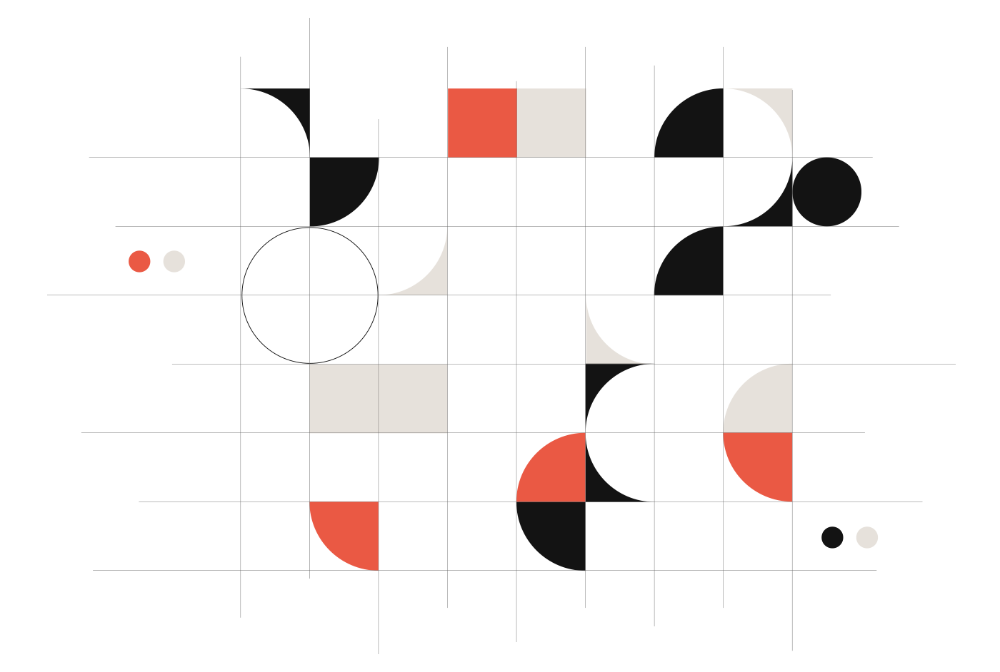
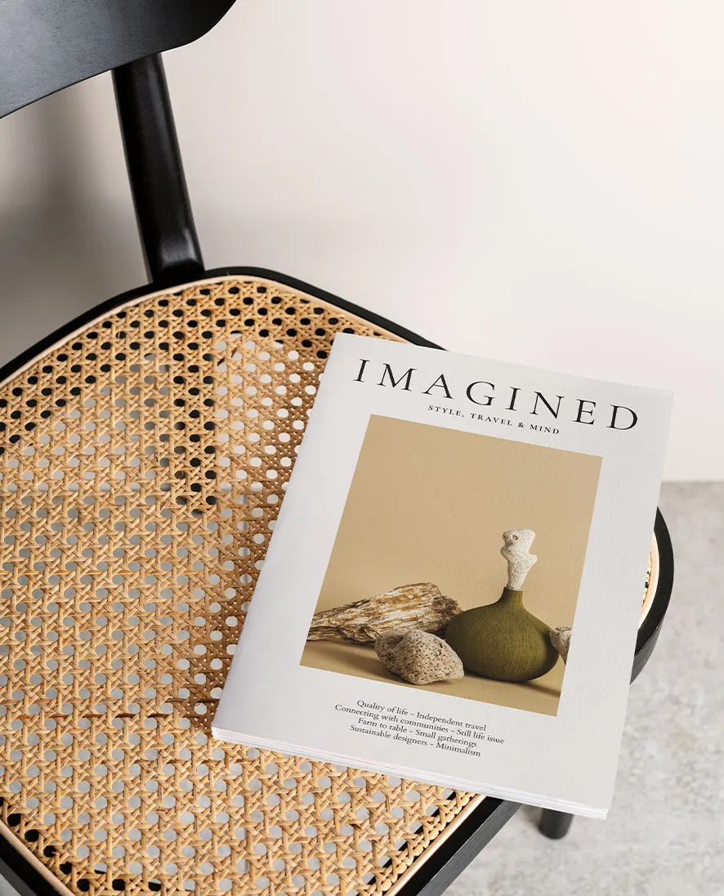
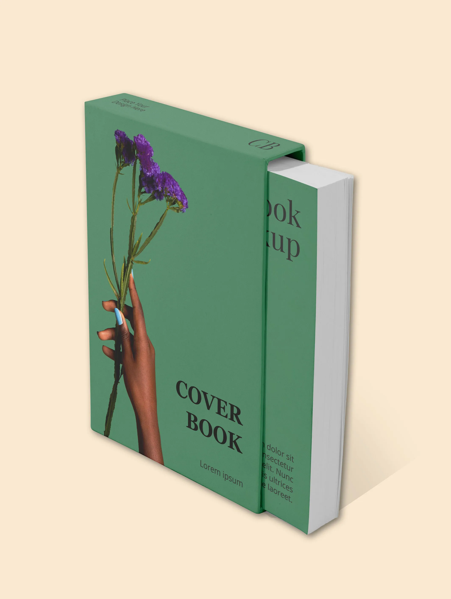
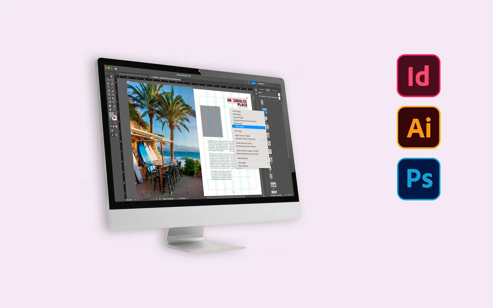

Grafica
Editoriale
Do forma a contenuti visivi e testuali trasformandoli in impaginati ordinati, leggibili e curati. Copertine, brochure, cataloghi, riviste, company profile e materiali multipagina devono guidare la lettura, valorizzare le immagini e mantenere coerenza dall’inizio alla fine.

Cosa ricevi
Un progetto editoriale può partire da testi, immagini, idee grafiche o contenuti già esistenti da organizzare meglio. Il risultato dipende dal tipo di materiale e dagli accordi definiti nel preventivo, ma l’obiettivo resta sempre lo stesso: creare un elaborato chiaro, coerente e pronto per l’utilizzo previsto.
Il mio approccio editoriale
Ogni progetto editoriale parte dall’organizzazione dei contenuti. Prima di pensare all’estetica, definisco ritmo visivo, gerarchia delle informazioni, equilibrio tra testi e immagini e coerenza tra le varie pagine. Lavoro su copertine, layout, mockup e impaginati con attenzione alla leggibilità, alla resa grafica e alla preparazione corretta dei file.

Layout editoriale
Mockup copertina
Strumenti di impaginazioneVuoi vedere il portfolio completo?
Nel portfolio trovi una selezione più ampia di lavori legati a logo design, brand identity, grafica pubblicitaria, impaginazione, stampa e comunicazione visiva.
© Luca Cantale. Tutti i progetti presenti nel portfolio sono mostrati a scopo dimostrativo. È vietata la riproduzione, la modifica o l’utilizzo senza autorizzazione.